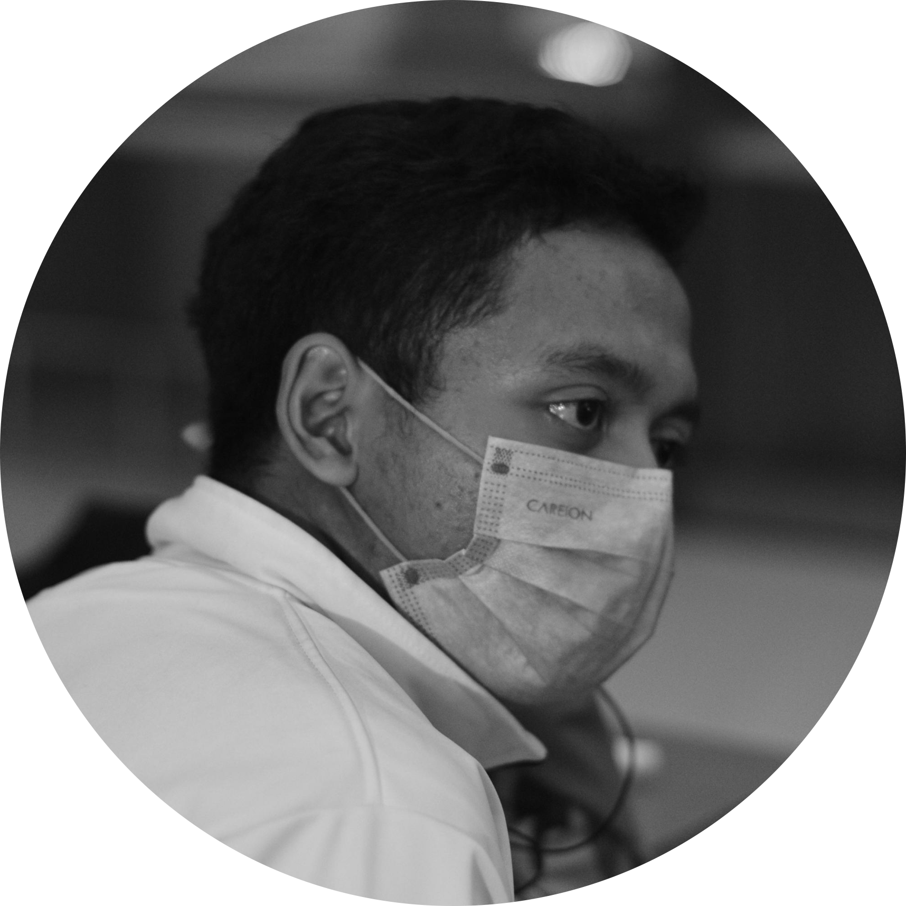

|  |
PROFILHai, perkenalkan nama saya Fadhil, saya adalah mahasiswa D3 Sistem Informasi UNDIKA angaktan tahun 2022. Saya lahir di Malang, sekarang saya tinggal di Sidoarjo. Sebagian besar masa kecil saya tinggal di Malang, lalu tahun 2012 saya pindah domisili tepatnya di Sidoarjo dan hingga saat ini, mungkin seterusnya akan tetap berada di kota udang ini. Sebelumnya saya merupakan lulusan SMK Penerbangan Juanda dan lulus pada tahun 2021, lulusan covid. Bicara tentang hobi, saya punya hobi motret dan ngewibu. Hobi motret ini awalnya karena suka dunia aviasi dan bertepatan dikasih kamera dari om, jadilah "aviaspotter". Akhirnya sekarang hobi motretnya disalurkan ke motret cosplay, jadi motret sambil ngewibu. Seringkali di beberapa kegiatan juga diminta untuk jadi dokumenter. Jadi kalau lihat di kampus bawa tas tiap hari keliatan berat, nahh.., karena juga bawa kamera. |